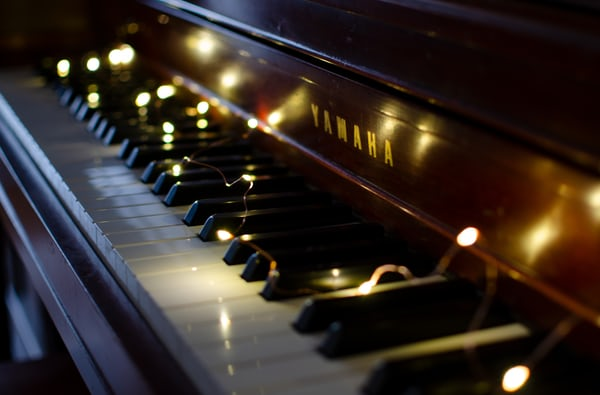

Introduction

My Hobbies are: Playing the Recorder and the Keyboard.
I adore playing instruments. It makes me feel at ease.
About: My Hobbies

My hobbies are Playing the Recorder and the Keyboard. After I get my school stuff done, finish my daily chores, finish my Coding lessons and homework, I usually play the Recorder and the Keyboard. I'm 12 years old and I go to grade seven. I want you guys to know that–playing an instrument of any type, in whatever free time you have is proven to be very favorable for a number of reasons such as:
1.Playing an instrument makes you smarter.
Einstein once said: “Life without playing music is inconceivable to me. I live my daydreams in music. I see my life in terms of music... I get most joy in life out of music”. And as it turns out, Einstein was onto something: many studies show a correlation between musical training and academic success, in both children and adults. Learning to play an instrument stimulates the brain, improving functions like memory and abstract reasoning skills, which are essential for maths and science.
2. Your social life will improve
Playing an instrument isn’t only good for your brain, it’s also great for expanding your social circle (sorry, pianists and organists). Joining a musical group at any age encourages you to develop relationships with new kinds of people. It also builds skills in leadership and team-building, as well as showing you the rewards of working with others.
3. Playing an instrument relieves stress
Music keeps you calm. It has a unique effect on our emotions, and has even been proven to lower heart rate and blood pressure. Psychologist Jane Collingwood believes that slow classical music is often the most beneficial. “Listening to music can have a tremendously relaxing effect on our minds and bodies, especially slow, quiet classical music. This type of music can have a beneficial effect on our physiological functions, slowing the pulse and heart rate, lowering blood pressure, and decreasing the levels of stress hormones.”
4. Playing an instrument gives you a sense of achievement
Messed up your double-stopping in rehearsal, then totally nailed it at the performance? Playing and succeeding at a musical instrument gives you a huge sense of pride and achievement, especially when you manage to perfect a passage you’ve been struggling with for weeks.
5. It builds your confidence
Playing an instrument helps you get comfortable with self-expression. As children begin to master their instrument, they will probably end up playing to a few audiences, starting with their music teacher or parents, and branching out to groups of other pupils and concert audiences. Playing in public can help children feel confident in presenting their work in a non-academic context.
6. Practising a musical instrument improves patience
OK, Franz Liszt wrote some insanely difficult music. But it’s an important lesson to learn that the more effort you put into something, the better the result will be. Dawsons Music advises to “give it a year” before you see big improvements in ability and confidence. “[Then,] you’ll look back and be glad of those hard first few months. Indeed, those first few months will forever be a badge of honour, saying you stuck it out and earned your stripes. There are no shortcuts to learning an instrument.”
7. It helps improve your memory
Researchers have found that learning to play a musical instrument can enhance verbal memory, spatial reasoning and literacy skills. Playing an instrument makes you use both sides of your brain, which strengthens memory power.
8. It increases discipline and time management skills
Unless you’re an out-of-this-world child prodigy, learning to play an instrument isn’t a skill you can master overnight. Learning music takes time and effort, and helps children understand that if they want to be good at something, they’ll need to put in the hours and organise their time effectively.
9. Playing music makes you more creative
Practising and perfecting a piece of music does wonders for the creative side of your brain. No matter how much a composer annotates their composition, they cannot fully express how a piece of music should be played. So it is up to the player to put their own stamp on a piece, to inject some of their personality into the music. There’s a reason classical artists win awards for their performances – here’s Julian Lloyd Webber with his super-emotional performance of Elgar’s Cello Concerto.
10. Playing music is fun!
We can harp on about all the scientifically accurate benefits to learning a musical instrument – but what matters most is that it’s enjoyable for the player. While other hobbies like watching TV or flicking through social media are passive, playing music actively engages and stimulates the brain, making you feel happy and occupied.
Defenition and basic operation
My Inspiration